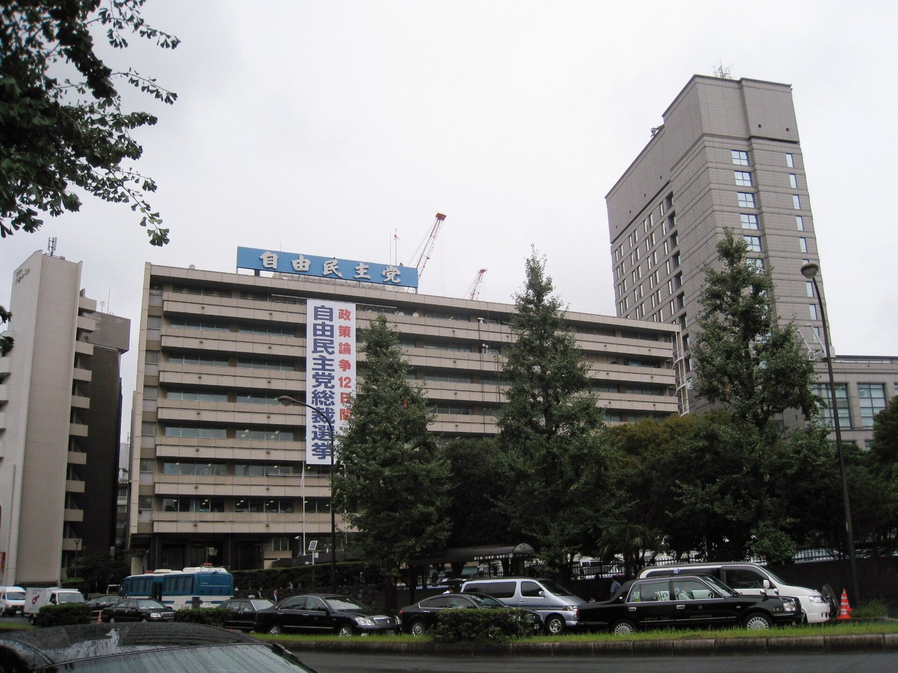

[한일수교 60년⑮] 연립 상대는 공명당에서 유신회로 바뀌고, 상징은 1년 넘게 보류됐다
26년 이어진 자민당-공명당 체제가 끝나고 2026년에는 자민당-유신회 352석이 됐다
야스쿠니는 2025년 가을부터 2026년 10월까지 네 차례 모두 참배 없이 공물만 올렸다
상징을 눌렀는데 대만 발언에서 터졌다… 딜레마는 해소되지 않고 자리를 옮겼다
2025년 10월 다카이치 사나에 총재의 총리 지명이 늦어졌다. 공명당이 지지를 보류했기 때문이다. 26년 이어진 자민당-공명당 협력이 흔들렸다. 1년 뒤 그 문제는 공명당이 사라지는 방식으로 정리됐다.

※ 이 연재는 2025년 인천투데이에 실린 「한일수교 60년」 연재를 잇는다. 논지는 이어받되 수치와 사실은 2026년 10월 기준으로 다시 확인해 썼다.
1. 2025년 10월의 딜레마
가. 공명당이 걸었던 조건
공명당은 평화헌법 9조 개정에 반대했다. 연립의 조건으로 야스쿠니 참배 자제와 영토 관련 발언 자제를 요구했다.
다카이치 총재는 자민당 총재 선거 1차 투표에서 181표를 얻었다. 해마다 야스쿠니를 참배해 왔고 다케시마의 날인 2월 22일 행사에 각료급 참석을 공언한 바 있다.
지지 기반과 연립 조건이 정면으로 부딪히는 구조였다.
나. 의석 산술
당시 일본유신회는 중의원 44석, 참의원 21석이었다. 국민민주당은 중의원 28석, 참의원 11석이었다. 자민당-공명당 연립은 2025년 7월 선거 뒤 참의원 과반이 없었다.
유신회는 개헌에 찬성한다. 공명당은 반대한다. 연립 상대를 바꾸면 개헌 노선이 정리되고 평화 노선 지지층을 잃는다.
다. 실용 쪽의 목소리
2025년 9월 24일부터 26일까지 도쿄와 오사카에서 한일언론포럼 관련 접촉이 있었다. 자민당 의원 나가시마 아키히사, 외무성 관계자, 유신회의 마에하라 세이지가 모두 실용 협력을 이어가고 상징 사안에는 신중해야 한다고 했다.
마에하라는 상징 사안이 정치적 에너지의 낭비라고 했다. 야스쿠니 추계 대제 10월 17일부터 19일까지가 첫 시험대로 꼽혔다.
2. 2026년의 답 하나: 연립이 바뀌었다
가. 공명당이 사라졌다
2026년 2월 8일 총선에서 입헌민주당과 공명당이 합당해 중도개혁연합으로 나왔다. 49석을 얻었다. 선거 전 두 당 의석 합계보다 123석 적다.
자민당은 316석을 얻었다. 일본유신회는 36석이다. 두 당이 465석 가운데 352석이다. 2월 18일 특별국회에서 다카이치 총리가 354표로 재지명됐다.
나. 조건이 사라졌다
공명당이 걸었던 조건은 공명당이 연립에 없으면 효력이 없다. 9조 개정 반대, 야스쿠니 자제, 영토 발언 자제라는 세 조건이 2026년에는 연립 안에서 제기되지 않는다.
자민당은 중의원에서 개헌 발의선 310석을 혼자 넘었다. 유신회는 개헌 찬성이다.
다. 그런데 참의원이 남았다
참의원에서는 자민당과 유신회가 과반에 미치지 못한다. 3분의 2는 더 멀다. 개헌 발의에는 양원 3분의 2가 필요하다.
연립 상대를 바꿔 개헌 노선을 정리했는데 산술이 여전히 막혀 있다. 딜레마가 해소된 것이 아니라 중의원에서 참의원으로 옮겨갔다.
3. 2026년의 답 둘: 상징은 보류됐다
가. 네 차례의 기록
2025년 10월 총재가 된 뒤 야스쿠니 추계 대제에 참배하지 않았다. 2026년 총리가 된 뒤 춘계 대제에도 참배하지 않았다. 2026년 8월 15일에는 자민당 총재 자격으로 사비로 다마구시를 봉납하고 멀리서 참배했다. 2026년 10월 17일 추계 대제에는 '내각총리대신 다카이치 사나에' 이름으로 마사카키를 봉납하고 참배하지 않았다. 대제는 10월 17일부터 19일까지 사흘이다.
총재가 되기 전에는 정기적으로 참배했다. 그 뒤로는 한 번도 가지 않았다.
나. 각료와 당 간부는 갔다
2026년 8월 15일 고이즈미 신지로 방위상이 직접 참배했다. 자민당 간부들이 단체로 참배했다.
총리는 비켜 가고 각료는 간다. 외교적 마찰을 최소화하면서 지지층에 신호를 보내는 배치다.
다. 다케시마의 날
2월 22일 다케시마의 날 행사에 각료급을 참석시킨다는 공언은 2026년에 어떻게 처리됐는지 확인하지 못했다.
4. 터진 곳은 다른 데였다
상징을 눌렀는데 2025년 11월 7일 중의원 예산위원회에서 대만 문제로 터졌다. 중국의 대만 해상 봉쇄가 일본의 존립을 위협할 수 있고 집단적 자위권을 쓸 수 있다는 답변이었다. 철회하지 않았다.
중국은 경제 제재와 문화교류 중단을 발표하고 2026년 1월 6일 희토류 수출을 금지했다. 2026년 9월 브리핑에서 일본 총리의 직함을 뺐다.
야스쿠니 참배를 보류해 얻은 외교적 여유보다 한 번의 국회 답변으로 잃은 것이 컸다.
상징 사안을 관리한다는 전략의 허점이 여기에 있다. 참배는 일정표에 있어서 관리할 수 있다. 국회 답변은 관리할 수 없다. 정치적 정체성은 억제해도 질의응답에서 나온다.
5. 한국에 미친 영향
가. 직접 마찰은 줄었다
야스쿠니 참배가 없었기 때문에 한일 사이에 그 사안으로 생기는 마찰이 2026년에는 없었다. 2026년 1월 나라, 5월 안동 정상회담이 순조롭게 열린 배경 가운데 하나다.
나. 대만 발언에는 거리를 뒀다
이재명 대통령은 대만 문제가 중국과 일본 사이 사안이고 한국이 개입할 일이 아니라고 했다. 대화로 풀리기를 바란다고 했다.
이 선택으로 한국은 중일 갈등에 끌려들지 않았다. 동시에 일본의 집단적 자위권 해석 확대에 대해 공식 입장을 정리할 기회를 미뤘다.
다. 다음 의제
일본의 집단적 자위권 행사 범위에 한반도가 포함되는지, 포함된다면 어떤 절차를 거치는지가 남은 문제다. 2026년 5월 7일 차관급으로 올라간 한일 외교·국방 2+2 협의회가 다룰 사안이다.
야스쿠니는 상징이고 집단적 자위권은 실체다. 2026년 한국은 상징 쪽에서 편해지고 실체 쪽에서는 아직 정리하지 못했다.
6. 딜레마의 현재 좌표
연립: 공명당에서 유신회로. 개헌 노선은 정리됐고 참의원 산술은 막혔다.
상징: 1년 넘게 보류. 총리는 공물, 각료는 참배.
실용: 2026년에만 정상회담 두 차례, 안보협의 차관급 격상, 액화천연가스와 핵심광물 협력.
실체: 대만 발언으로 중국과 급랭. 희토류 수출 금지.
네 항목 가운데 셋은 다카이치 총리의 계산대로 움직였다. 넷째가 틀어졌고 그 하나가 나머지 셋보다 비용이 크다.
상징을 참으면 되는 문제가 아니었다는 뜻이다.
참고문헌
일본 총무성, 제51회 중의원 의원 총선거 개표 결과, 2026년 2월
일본 중의원 예산위원회 회의록, 2025년 11월 7일
경향신문, 다카이치 야스쿠니 공물 봉납 보도, 2026년 10월 17일
파이낸셜뉴스, 야스쿠니 참배 관련 보도, 2026년 8월 15일
인천투데이, 「한일수교 60년 ⑮」, 2025년 10월 10일
※ 이 기사는 AI 프로그램 클로드를 활용해 작성했습니다.
관련기사
- [한일수교 60년⑯] 무라야마는 떠났고, 유골을 찾던 사람들은 2026년에 감정 절차를 얻어 냈다
- [한일수교 60년⑭] 1년 전 포럼에서 들은 불안, 2026년에 거의 다 현실이 됐다
- [한일수교 60년⑰] 다카이치 1년, 중국은 '총리' 호칭마저 뗐고 한국만 남았다
- [한일수교 60년⑬] 사면초가의 숫자들, 중국 해경 92시간 8분과 접속수역 355일
저작권자 © AI경세제민 무단전재 및 재배포, AI학습 및 활용 금지